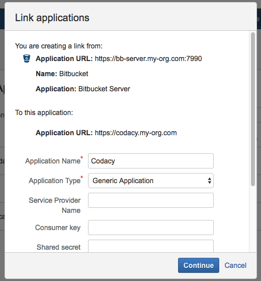

Bitbucket Stash¶
Set the following configurations from your Bitbucket instance on the values.yaml file:
global: bitbucketEnterprise: hostname: "CHANGE_ME" protocol: "CHANGE_ME"
Go to admin/integration on Codacy and set the Project Keys on the Bitbucket Server integration, these should be the keys of the projects you would like to retrieve repositories of.

Stash Application Link¶
To set up Stash you need to create an application link on your Stash installation. You can click on here and go to the application links list.
Application Link Creation¶
Create the link, use your Codacy installation URL for this
Name the link¶
Application Name: You can name the application (ex: Codacy)
Application Type: The application type is Generic Application
The rest of the configuration should be left blank.

After the link is created, click edit to add an incoming connection.
Add incoming connection¶
Consumer Key: This value should be copied from the "Client ID" field in the Codacy setup page.
Consumer Name: You can choose any name (ex: Codacy).
Public Key: This value should be copied from the "Client Secret" field on the Codacy setup page.
The rest of the fields can be left blank.

After the application link is created, you will be able to add Bitbucket Server as an integration in the repository settings.